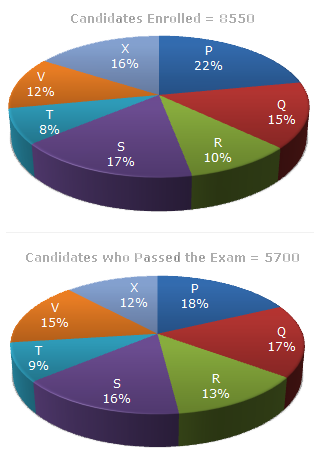

Stackup.com
Home
Aptitude
Logical Reasoning
General Knowledge
Ask Now
Data Interpretation
Home
>>
Aptitude
>> Test
Instructions
Total number of questions : 05.
Each question carry 1 mark, no negative marks.
DO NOT refresh the page.
All the best :-)
Study the following graph carefully and answer the questions given below:
Distribution of candidates who were enrolled for MBA entrance exam and the candidates (out of
those enrolled) who passed the exam in different institutes:

1.What percentage of candidates passed the Exam from institute T out of the total number of candidates enrolled from the same institute?
A.50%
B.62.5%
C.75%
D.80%
2.Which institute has the highest percentage of candidates passed to the candidates enrolled
A.Q
B.R
C.V
D.T
3.The number of candidates passed from institutes S and P together exceeds the number of candidates enrolled from institutes T and R together by:
A.228
B.279
C.399
D.407
4.What is the percentage of candidates passed to the candidates enrolled for institutes Q and R together?
A.68%
B.80%
C.74%
D.65%
5.What is the ratio of candidates passed to the candidates enrolled from institute P?
A.9:11
B.14:17
C.6:11
D.9:17
 Stackup.com
Data Interpretation
Stackup.com
Data Interpretation